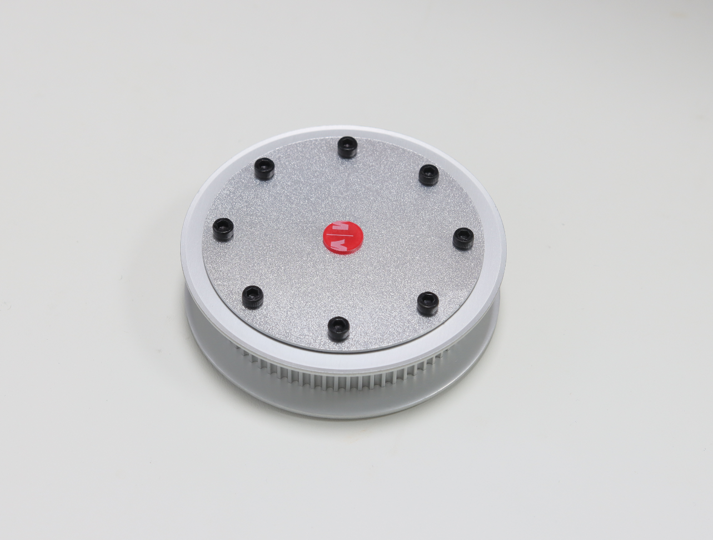
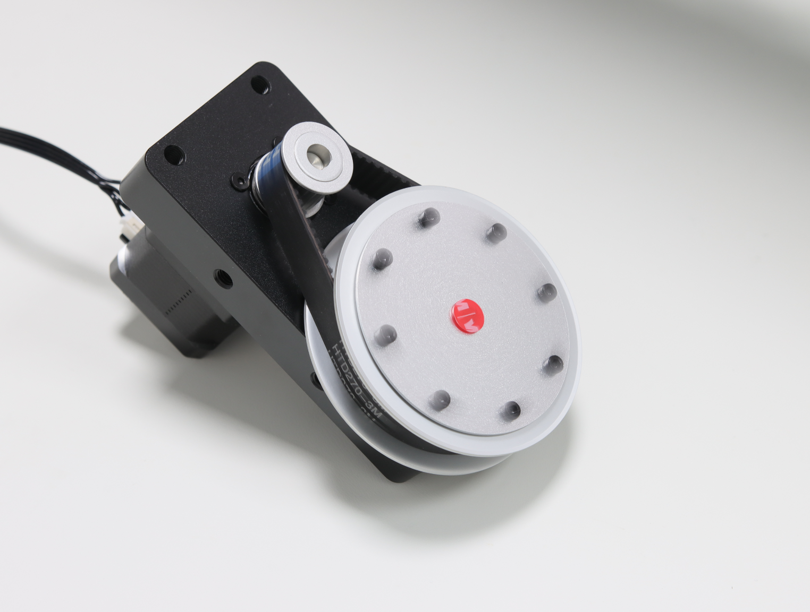
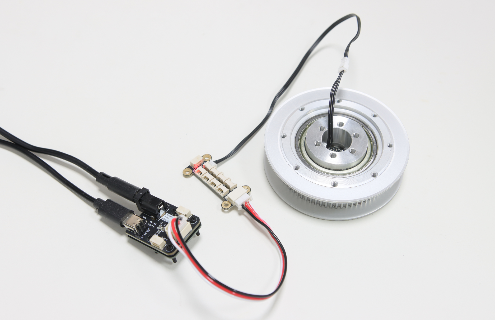
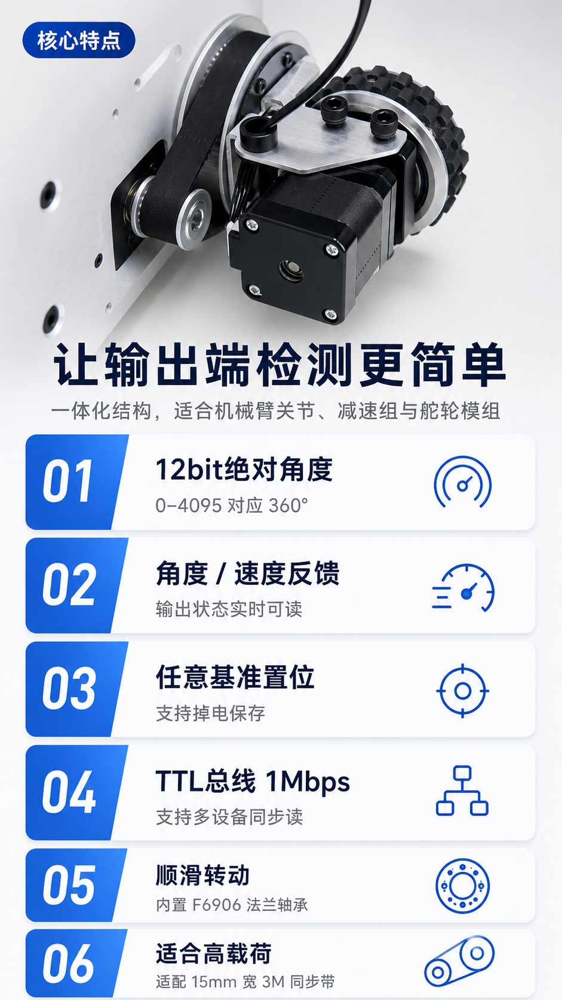

12bit 绝对角度
单圈 0-4095 对应 360°，断电后不丢失单圈绝对位置，上电无需重新回零。
HTD 3M 72T absolute encoder pulley
同步轮、法兰轴承、固定座与编码器一体化。安装在机械臂关节、同步带减速组或舵轮转向输出端，可直接读取输出端的绝对角度和速度。

核心优势
相较于在电机端估算输出角度，SP3M72-E02 将编码器直接集成到同步轮输出端，更适合检测真实关节角度，并减少独立轴承座与编码器结构的设计工作。
单圈 0-4095 对应 360°，断电后不丢失单圈绝对位置，上电无需重新回零。
实时读取同步轮输出端位置和速度，适合机器人关节闭环监测与状态判断。
可通过软件将当前位置设置为指定值，校准参数掉电保存，方便装配后调试。
内置 F6906 法兰轴承；中间固定座保持静止，同步轮在外部平稳旋转。
HTD 3M 72T 规格，适配 15mm 宽 3M 同步带，适用于较高负载的同步带传动。
1Mbps 单线 TTL 通信，可与灵影设备及飞特 STS、HLS 系列总线舵机混合使用。
应用场景


安装与接线
中心固定轴通过 6 个 M4 螺纹孔连接静止结构；同步轮平面的 8 个 M3 螺纹孔可连接连杆或其它旋转结构。编码器使用 HC-1.25-3P 接口，线序为 - / + / S。
技术参数
| 同步轮规格 | HTD 3M 72T |
|---|---|
| 适配同步带 | 15mm 宽 HTD 3M 同步带 |
| 组件总厚度 | 22.05mm |
| 同步轮厚度 | 20mm |
| 旋转端安装孔 | 8 × M3，PCD Ø60mm |
| 固定轴安装孔 | 6 × M4，PCD Ø23mm |
| 轴承 | F6906 法兰轴承 |
| 编码器 | E02 12bit 绝对磁编码器 |
| 角度反馈 | 0-4095 对应 360° |
| 速度反馈 | 步/秒，带正负方向 |
| 通信 | 单线 TTL，默认 1Mbps |
| 接口 | HC-1.25-3P，- / + / S |
| 输入电压 / 电流 | DC 5-28V / <10mA |
| 重量 | 约 190g |
| 径向磁铁 | 默认配备 6 × 2.5mm 径向磁铁 |
选型说明
该产品提供同步轮、轴承、固定座与编码器组件，但仍需要用户根据机械臂、减速组或底盘结构设计相应安装件。希望直接使用完整减速模组时，可选择已集成电机与传动结构的产品。

资料与 SDK
Wiki 页面将提供 Python、C++ SDK、结构资料及基准校准教程。